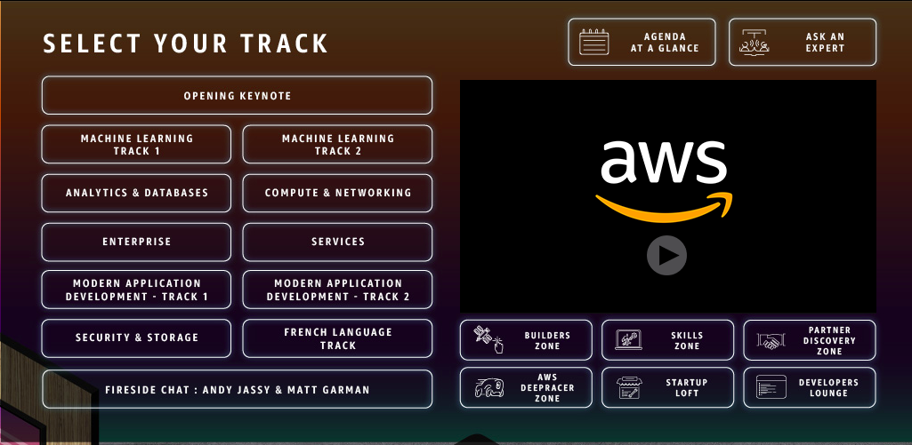

The Summit Overall
This year's Summit had to be moved online due to the widespread COVID-19 pandemic. Attendees were able to register for the event online, and save calendar invites, along with the event links to dial into the Summit on the day of.
Major Kudos to the AWS Team for the totally amazing turnaround in moving the entire Summit online. AWS Summits are global tech conferences that are typically held at multiple locations around the world. They proved during this time, using their own services and virtulized infrastructure as the flywheel of their business, how quickly and efficiently other business have the potential to switch to virtualized environments during uncertain circumstances. This is the sort of flexibility that is showing to either make or break businesses.
When I dialed into the Summit, I was presented with this Lobby:

Source: Amazon Web Services
The Keynote
Werner Vogels
Source: Amazon Web Services
This year's keynote address was delivered by Werner Vogels (CTO and VP of Amazon). Werner has been with Amazon since 2004, where he started out as the Director of Systems Research. Prior to joining Amazon, he held a number of research positions with the Royal Netherlands Navy where he studied radiology, diagnostics, and therapy. Over a period of time, he worked with several other research institutions centered around building fault-tolerant distributed systems with INESC (Lisboa, Portugal), Cornell University, and his own Reliable Network Solutions Inc.
Werner has been a key partner in the development of Amazon's Dynamo (storage engine for Amazon's shopping cart). He is widely-known and regarded around the world for his expertise on building ultra-scalable systems.
Werner's Message
Werner kicked off the 2020 AWS Summit expressing the importance of foundational cloud principles. In light of the recent COVID-19 pandemic, Werner stated how being knowledgeable in following proper architecture, and using autoscaling to scale up/down in response to customer usage patterns has been the driving force behind enabling Amazon's business success as of lately.
"Creating technology solutions is a lot like constructing a phyiscal, brick and mortar building - You need a solid foundation. If the foundation is not solid, it will cause structural problems that undermine the integrity and functions of the building in the long-term." - Werner Vogels
Current State of Digital Businesses during COVID-19
As the COVID-19 pandemic continues to spread throughout the world, more people than ever have been working from home, shopping from home, paying bills from home, communicating with their loved ones from home -- all of this via digital technology; which just cannot afford to be unreliable during these tumultuous times. Werner mentioned that it is vital for customers of AWS to make good use of this time, in order to optimize their systems to best serve customers.
Werner also provided examples of various AWS partners addressing the heightening customer demands during this COVID-19 pandemic. A telemedicine and healthcare platform based in Europe named Care Connect has risen up to the challenge. Care Connect provides a secure, reliable, and scalable service for healthcare professionals to conduct virtual video appointments with patients.
"We have seen increased amounts for video appointments given current times. KRY's platform offers a way for doctors to continue the consulations over video, so that patients can maintain access to vital healthcare services. The Care Connect platform runs on AWS using Amazon S3, Cloudfront, Amazon ECS, AWS Fargate, and Amazon Aurora." - Werner Vogels
The scalability aspect allows healthcare professionals to increase the number of patients, while also being able to safely provide video consulations. The KRY Team launched Care Connect at scale, in about a week and a half.
"This goes to show how efficient and valuable cloud can be. Lot's of companies have been using cloud for years, whereas some are just beginning. What is proven, however, is that with cloud, companies and people in all corners of the globe are solving hard, human problems." - Werner Vogels
Amazon's response to changes in customer behavior during COVID-19
COVID-19 has also caused major increase in the usage of video-streaming service Amazon Prime, Werner mentioned. Amazon has addressed this customer behavior using Predictive Scaling - where the developers use Machine Learning to monitor customer's peak watch times. And they deploy server instances dynamically to accommodate video streaming when the peak watch times hit. Another example of organizations constantly being innovative, and adapting to changes in customer behavior, as well as changes/disruptions in the overall global landscape.
My Learnings
Learning Tracks
Like every year, each technical topic is organized in the following tracks. This year, AWS has chosen to upload their content, and allow customers to browse through sessions of interest.
- Machine Learning
- Analytics & Databases
- Compute & Networking
- Enterprise
- Services
- Modern Application Development
- Security & Storage
Sessions I attended
I allocated most of my time attending the below sessions. These are part of the Modern Application Development, and Compute and Networking Tracks.
- CI/CD at scale: Best practices with AWS DevOps services
- Kubernetes GitOps on AWS
- Getting more out of Amazon EC2
- A modern application builder’s guide to testing
- Building serverless applications with AWS Amplify